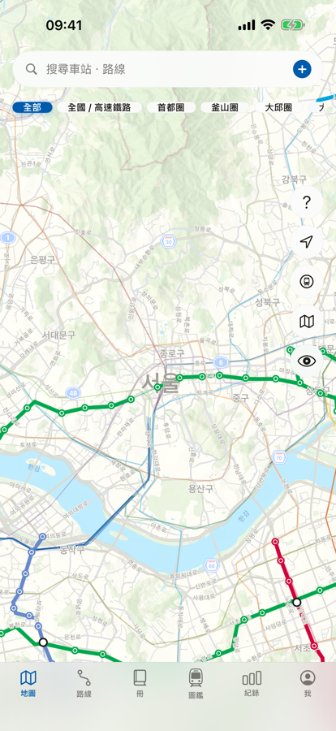
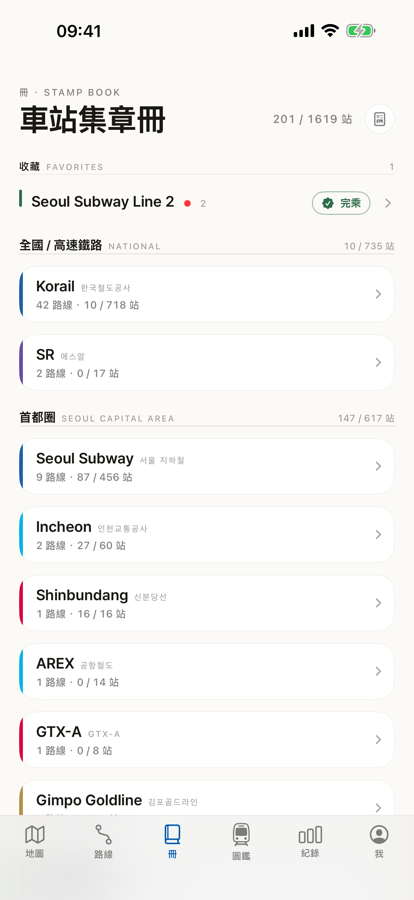
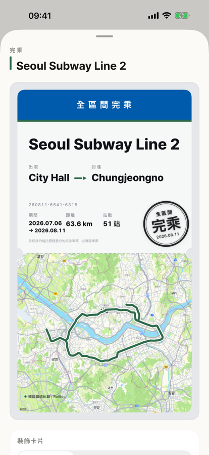

点一下车站即可标记造访。搭过的路线会在地图上涂上真正的路线色，并累积在印章簿里。涵盖韩国全国 17 家营运商、55 条路线 — 从 1 号线到 KTX、SRT。

以前搭过的路线也能回溯记录。每个车站都能留下照片与笔记。
搭过的路线会在地图上涂上真正的路线色。用「仅显示未搭」筛选，规划下一趟行程。
造访过的车站会化为印章累积，完整搭完一条路线，就会出现「全线完乘」印章卡。
17 家营运商、55 条路线、1,191 个车站 — 从地铁到 KTX、SRT，都能在同一张地图上记录。


每个车站都能留下照片与笔记。
从 KTX-山川到无穷花号。搭过的车辆与看过的车辆分开搜集。
造访日期可自由选择。从很久以前搭过的路线开始补齐吧。
把完乘卡片以 9:16 比例直接分享到 Instagram 限时动态。
通过 iCloud，换设备记录也能延续，并可用 JSON、CSV 备份・导出。
不用注册就能开始，离线时也能记录。
浏览路线・乘车记录・印章簿・iCloud 同步全部免费。
Pro 会加上收藏路线无上限、详细统计与 17 个广域自治体热区图、移除水印的分享卡片、PDF 印章簿。
点一下车站即可标记造访。搭过的路线会在地图上涂上实际的路线色，并累积在印章簿里。收录韩国 17 家营运商、55 条路线，完乘后会出现印章卡。